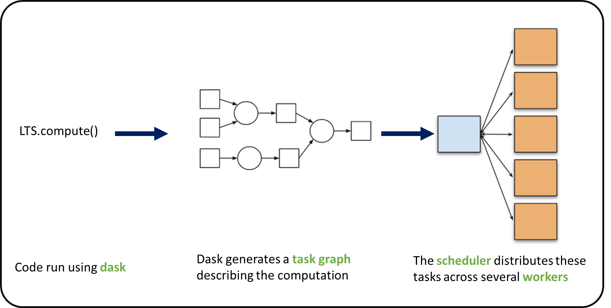

Parallel computing with Dask
Contents
Parallel computing with Dask#
Context#
We will be using Dask with Xarray to parallelize our data analysis. The analysis is very similar to what we have done in previous episodes but this time we will use data on a global coverage that we read from a shared catalog (stored online in the Pangeo EOSC Openstack Object Storage).
Data#
In this episode, we will be using CMIP6 data from intake-esm catalogue
Setup#
This episode uses the following Python packages:
pooch [USR+20]
s3fs [S3FsDTeam16]
hvplot [RSB+20]
dask [DaskDTeam16]
graphviz [EGK+03]
numpy [HMvdW+20]
pandas [pdt20]
geopandas [JdBF+20]
Please install these packages if not already available in your Python environment (you might want to take a look at the Setup page of the tutorial).
Packages#
In this episode, Python packages are imported when we start to use them. However, for best software practices, we recommend you to install and import all the necessary libraries at the top of your Jupyter notebook.
Parallelize with Dask#
We know from previous chapter chunking_introduction that chunking is key for analyzing large datasets. In this episode, we will learn to parallelize our data analysis using Dask on our chunked dataset.
What is Dask ?#
Dask scales the existing Python ecosystem: with very or no changes in your code, you can speed-up computation using Dask or process bigger than memory datasets.
Dask is a flexible library for parallel computing in Python.
It is widely used for handling large and complex Earth Science datasets and speed up science.
Dask is powerful, scalable and flexible. It is the leading platform today for data analytics at scale.
It scales natively to clusters, cloud, HPC and bridges prototyping up to production.
The strength of Dask is that is scales and accelerates the existing Python ecosystem e.g. Numpy, Pandas and Scikit-learn with few effort from end-users.
It is interesting to note that at first, Dask has been created to handle data that is larger than memory, on a single computer. It then was extended with Distributed to compute data in parallel over clusters of computers.
How does Dask scale and accelerate your data analysis?#
Dask proposes different abstractions to distribute your computation. In this Dask Introduction section, we will focus on Dask Array which is widely used in pangeo ecosystem as a back end of Xarray.
As shown in the previous section Dask Array is based on chunks. Chunks of a Dask Array are well-known Numpy arrays. By transforming our big datasets to Dask Array, making use of chunk, a large array is handled as many smaller Numpy ones and we can compute each of these chunks independently.

- `Xarray` uses Dask Arrays instead of Numpy when chunking is enabled, and thus all Xarray operations are performed through Dask, which enables distributed processing.
How does Xarray with Dask distribute data analysis?#
When we use chunks with Xarray, the real computation is only done when needed or asked for, usually when invoking compute() function. Dask generates a task graph describing the computations to be done. When using Dask Distributed a Scheduler distributes these tasks across several Workers.

#### What is a Dask Distributed ?
A Dask Distributed is made of two main components:
a Scheduler, responsible for dishandling computations graph and distributing tasks to Workers.
One or several (up to 1000s) Workers, computing individual tasks and storing results and data into distributed memory (RAM and/or worker’s local disk).
A user usually needs distributed Client and Cluster object as shown below to use Dask Distribute.

Where can we deploy Dask distributed cluster?#
Dask distributed clusters can be deployed on your laptop or on distributed infrastructures ( Cloud, HPC centers or ..). Dask distributed Cluster object is responsible of deploying and scaling a Dask Cluster on the underlying resources.

Tip
A Dask Cluster can also be created on a single machine (for instance your laptop) e.g. there is no need to have dedicated computational resources. However, speedup will only be limited to your single machine resources if you do not have dedicated computational resources!
Dask distributed Client#
The Dask distributed Client is what allows you to interact with Dask distributed Clusters. When using Dask distributed, you always need to create a Client object. Once a Client has been created, it will be used by default by each call to a Dask API, even if you do not explicitly use it.
No matter the Dask API (e.g. Arrays, Dataframes, Delayed, Futures, etc.) that you use, under the hood, Dask will create a Directed Acyclic Graph (DAG) of tasks by analysing the code. Client will be responsible to submit this DAG to the Scheduler along with the final result you want to compute. The Client will also gather results from the Workers, and aggregates it back in its underlying Python process.
Using Client() function with no argument, you will create a local Dask cluster with a number of workers and threads per worker corresponding to the number of cores in the ‘local’ machine. Here, during the workshop, we are running this notebook in Pangeo EOSC cloud deployment, so the ‘local’ machine is the jupyterlab you are using at the Cloud, and the number of cores is the number of cores on the cloud computing resources you’ve been given (not on your laptop).
from dask.distributed import Client
client = Client() # create a local dask cluster on the local machine.
client
Client
Client-1b23420e-7b29-11ed-977f-6045bdf734a2
| Connection method: Cluster object | Cluster type: distributed.LocalCluster |
| Dashboard: http://127.0.0.1:8787/status |
Cluster Info
LocalCluster
e5bc1ddd
| Dashboard: http://127.0.0.1:8787/status | Workers: 2 |
| Total threads: 2 | Total memory: 6.78 GiB |
| Status: running | Using processes: True |
Scheduler Info
Scheduler
Scheduler-71287e2f-c198-4649-9191-33177cdd8cd0
| Comm: tcp://127.0.0.1:34441 | Workers: 2 |
| Dashboard: http://127.0.0.1:8787/status | Total threads: 2 |
| Started: Just now | Total memory: 6.78 GiB |
Workers
Worker: 0
| Comm: tcp://127.0.0.1:33833 | Total threads: 1 |
| Dashboard: http://127.0.0.1:36111/status | Memory: 3.39 GiB |
| Nanny: tcp://127.0.0.1:37103 | |
| Local directory: /tmp/dask-worker-space/worker-6qj9lpdr | |
Worker: 1
| Comm: tcp://127.0.0.1:39039 | Total threads: 1 |
| Dashboard: http://127.0.0.1:45969/status | Memory: 3.39 GiB |
| Nanny: tcp://127.0.0.1:42143 | |
| Local directory: /tmp/dask-worker-space/worker-__s0y2q4 | |
Inspecting the Cluster Info section above gives us information about the created cluster: we have 2 or 4 workers and the same number of threads (e.g. 1 thread per worker).
- You can also create a local cluster with the `LocalCluster` constructor and use `n_workers` and `threads_per_worker` to manually specify the number of processes and threads you want to use. For instance, we could use `n_workers=2` and `threads_per_worker=2`.
- This is sometimes preferable (in terms of performance), or when you run this tutorial on your PC, you can avoid dask to use all your resources you have on your PC!
Dask Dashboard#
Dask comes with a really handy interface: the Dask Dashboard. We will learn here, how to use that through dask jupyterlab extension.
To use Dask Dashbord through jupyterlab extension at Pangeo EOSC FOSS4G infrastructure, you will just need too look at the html link you have for your jupyterlab, and Dask dashboard port number, as highlighted in the figure below.


Then click the orange icon indicated in the above figure, and type ‘your’ dashboard link (normally, you just need to replace ‘todaka’ to ‘your username’).
You can click several buttons indicated with blue arrows in above figures, then drag and drop to place them as your convenience.

It’s really helpfull to understand your computation and how it is distributed.
Dask Distributed computations on our dataset#
Lets open dataset from catalogue we made before, select a single location over time and visualize the task graph generated by Dask, and observe the Dask Dashboard.
Read from online cmip6 ARCO dataset#
We will access analysis-ready, cloud optimized (ARCO) introduced in previous data_discovery section.
import xarray as xr
xr.set_options(display_style="html")
import intake
import cftime
import matplotlib.pyplot as plt
import cartopy.crs as ccrs
import numpy as np
import hvplot.xarray
%matplotlib inline
cat_url = "https://storage.googleapis.com/cmip6/pangeo-cmip6.json"
col = intake.open_esm_datastore(cat_url)
cat = col.search(
experiment_id=["historical"]
# , table_id=['day']
# source_id=['NorESM2-LM']
,
institution_id=["NIMS-KMA"]
# , table_id=['Amon']
,
table_id=["3hr"],
variable_id=["tas"],
member_id=["r1i1p1f1"],
grid_label=["gr"],
)
display(cat.df)
dset_dict = cat.to_dataset_dict(zarr_kwargs={"use_cftime": True})
dset = dset_dict[list(dset_dict.keys())[0]]
---------------------------------------------------------------------------
RuntimeError Traceback (most recent call last)
RuntimeError: module compiled against API version 0x10 but this version of numpy is 0xe
---------------------------------------------------------------------------
RuntimeError Traceback (most recent call last)
RuntimeError: module compiled against API version 0x10 but this version of numpy is 0xe
---------------------------------------------------------------------------
RuntimeError Traceback (most recent call last)
RuntimeError: module compiled against API version 0x10 but this version of numpy is 0xe
---------------------------------------------------------------------------
RuntimeError Traceback (most recent call last)
RuntimeError: module compiled against API version 0x10 but this version of numpy is 0xe
---------------------------------------------------------------------------
ImportError Traceback (most recent call last)
Cell In[2], line 6
4 import intake
5 import cftime
----> 6 import matplotlib.pyplot as plt
7 import cartopy.crs as ccrs
8 import numpy as np
File ~/micromamba-root/envs/clivar/lib/python3.10/site-packages/matplotlib/__init__.py:107
103 import warnings
105 # cbook must import matplotlib only within function
106 # definitions, so it is safe to import from it here.
--> 107 from . import _api, cbook, docstring, rcsetup
108 from matplotlib.cbook import MatplotlibDeprecationWarning, sanitize_sequence
109 from matplotlib.cbook import mplDeprecation # deprecated
File ~/micromamba-root/envs/clivar/lib/python3.10/site-packages/matplotlib/rcsetup.py:26
24 from matplotlib import _api, animation, cbook
25 from matplotlib.cbook import ls_mapper
---> 26 from matplotlib.colors import Colormap, is_color_like
27 from matplotlib.fontconfig_pattern import parse_fontconfig_pattern
28 from matplotlib._enums import JoinStyle, CapStyle
File ~/micromamba-root/envs/clivar/lib/python3.10/site-packages/matplotlib/colors.py:82
80 import matplotlib as mpl
81 import numpy as np
---> 82 from matplotlib import _api, cbook, scale
83 from ._color_data import BASE_COLORS, TABLEAU_COLORS, CSS4_COLORS, XKCD_COLORS
86 class _ColorMapping(dict):
File ~/micromamba-root/envs/clivar/lib/python3.10/site-packages/matplotlib/scale.py:18
16 import matplotlib as mpl
17 from matplotlib import _api, docstring
---> 18 from matplotlib.ticker import (
19 NullFormatter, ScalarFormatter, LogFormatterSciNotation, LogitFormatter,
20 NullLocator, LogLocator, AutoLocator, AutoMinorLocator,
21 SymmetricalLogLocator, LogitLocator)
22 from matplotlib.transforms import Transform, IdentityTransform
25 class ScaleBase:
File ~/micromamba-root/envs/clivar/lib/python3.10/site-packages/matplotlib/ticker.py:179
177 import matplotlib as mpl
178 from matplotlib import _api, cbook
--> 179 from matplotlib import transforms as mtransforms
181 _log = logging.getLogger(__name__)
183 __all__ = ('TickHelper', 'Formatter', 'FixedFormatter',
184 'NullFormatter', 'FuncFormatter', 'FormatStrFormatter',
185 'StrMethodFormatter', 'ScalarFormatter', 'LogFormatter',
(...)
192 'MultipleLocator', 'MaxNLocator', 'AutoMinorLocator',
193 'SymmetricalLogLocator', 'LogitLocator', 'OldAutoLocator')
File ~/micromamba-root/envs/clivar/lib/python3.10/site-packages/matplotlib/transforms.py:46
43 from numpy.linalg import inv
45 from matplotlib import _api
---> 46 from matplotlib._path import (
47 affine_transform, count_bboxes_overlapping_bbox, update_path_extents)
48 from .path import Path
50 DEBUG = False
ImportError: numpy.core.multiarray failed to import
dset
Compute Weigted arctic average#
Let’s try to also take only the data above 60\(^\circ\)
dset = dset.where(dset["lat"] > 60.0, drop=True) #
# this line limiting time is only for building jupyter book
dset = dset.sel(time=slice("2000-01-01", "2010-01-01"))
dset
By inspecting the variable ‘tas’ on the representation above, you’ll see that data array represent about 8.2 GiB of data, so more thant what is available on this notebook server, i.e. even on the local Dask Cluster we created above. But thanks to chunking, we can still analyze it!
Lets plot the first timestep
projection = ccrs.Mercator(central_longitude=-10)
f, ax = plt.subplots(subplot_kw=dict(projection=projection))
dset["tas"].isel(time=0).plot(
transform=ccrs.PlateCarree(), cbar_kwargs=dict(shrink=0.7), cmap="coolwarm"
)
ax.coastlines()
Compute weighted mean#
Creating weights: for a rectangular grid the cosine of the latitude is proportional to the grid cell area.
Compute weighted mean values
def computeWeightedMean(ds):
# Compute weights based on the xarray you pass
weights = np.cos(np.deg2rad(ds.lat))
weights.name = "weights"
# Compute weighted mean
air_weighted = ds.weighted(weights)
weighted_mean = air_weighted.mean(("lon", "lat"))
return weighted_mean
weighted_mean = computeWeightedMean(dset)
weighted_mean
Did you notice something on the Dask Dashboard when running the two previous cells?
We didn’t ‘compute’ anything. We just build a Dask task graph with it’s size indicated as count above, but did not ask Dask to return a result.
You can try to plot the dask graph before computation and understand what dask workers will do to compute the value we asked for.
weighted_mean.tas.data.visualize()
Lets compute using dask!#
%%time
weighted_mean = weighted_mean.compute()
Calling compute on our Xarray object triggered the execution on Dask Cluster side.
You should be able to see how Dask is working on Dask Dashboard.
weighted_mean.tas.plot()
Close client to terminate local dask cluster#
The Client and associated LocalCluster object will be automatically closed when your Python session ends. When using Jupyter notebooks, we recommend to close it explicitely whenever you are done with your local Dask cluster.
client.close()
Scaling your Computation using Dask Gateway.#
For this workshop, according to the Pangeo EOSC deployment, you will learn how to use Dask Gateway to manage Dask clusters over Kubernetes, allowing to run our data analysis in parallel e.g. distribute tasks across several workers.
Lets set up your Dask Gateway.
As Dask Gateway is configured by default on this ifnrastructure, you just need to execute the following cells.
from dask_gateway import Gateway
gateway = Gateway()
##A line of trick to clean your dask cluster before you start your computation
from dask.distributed import Client
clusters = gateway.list_clusters()
print(clusters)
for cluster in clusters:
cluster = gateway.connect(cluster.name)
print(cluster)
client = Client(cluster)
client.close()
cluster.shutdown()
Create a new Dask cluster with the Dask Gateway#
## Please don't execute this cell, it is needed for building the Jupyter Book
cluster = None
cluster = gateway.new_cluster(worker_memory=2, worker_cores=1)
cluster.scale(8)
cluster
Lets setup the Dask Dashboard with your new cluster.
This time, copy and past the link above indicated in Dashboard to the dasklab extension.
Get a client from the Dask Gateway Cluster#
As stated above, creating a Dask Client is mandatory in order to perform following Daks computations on your Dask Cluster.
from distributed import Client
if cluster:
client = Client(cluster) # create a dask Gateway cluster
else:
client = Client() # create a local dask cluster on the machine.
client
Repeat above computation with more dask workers.#
dset
weighted_mean = computeWeightedMean(dset)
weighted_mean
%%time
weighted_mean = weighted_mean.compute()
Comparison with unweighted mean#
We select a time range
Note how the weighted mean temperature is higher than the unweighted.
weighted_mean["tas"].sel(time=slice("2000-01-01", "2010-01-01")).plot(label="weighted")
dset["tas"].sel(time=slice("2000-01-01", "2010-01-01")).mean(("lon", "lat")).plot(
label="unweighted"
)
plt.legend()
- It was faster. Why?
hvplot and dask#
dset.isel(member_id=0).hvplot.quadmesh( # time=0,
x="lon",
y="lat",
rasterize=True,
geo=True,
global_extent=False,
projection=ccrs.Orthographic(30, 90),
project=True,
cmap="coolwarm",
coastline="50m",
frame_width=400,
title=dset.attrs["references"]
# , title="Near-surface Temperature over Norway (CMIP6 CESM2)"
)
- Compare the data size and 'used' data size for each worker in dask dashboard
- Lets try to zoom. What happend with your plot? How was the dask dashboard reacted with zooming?
- What is rastersize=True ? (Hint: https://hvplot.holoviz.org/user_guide/Customization.html#datashading-options)
- What is 'cluster.scale(4)' ?
- instead of .compute, try using .persist, how's the dashboard?
client.close()
cluster.shutdown()
- Dask will try to hold data on the memory, then try to spill that to hard disk of worker. If you would like to avoid that dask worker use your local disk (It may slow down your computation depending on what kind of hardware you have), you can use following command after importing dask.distributed. dask.config.set({"distributed.worker.memory.spill": 0})
Packages citation#
- EGK+03
John Ellson, Emden R. Gansner, Eleftherios Koutsofios, Stephen C. North, and Gordon Woodhull. Graphviz and dynagraph – static and dynamic graph drawing tools. In GRAPH DRAWING SOFTWARE, 127–148. Springer-Verlag, 2003.
- HMvdW+20
Charles R. Harris, K. Jarrod Millman, Stéfan J. van der Walt, Ralf Gommers, Pauli Virtanen, David Cournapeau, Eric Wieser, Julian Taylor, Sebastian Berg, Nathaniel J. Smith, Robert Kern, Matti Picus, Stephan Hoyer, Marten H. van Kerkwijk, Matthew Brett, Allan Haldane, Jaime Fernández del Río, Mark Wiebe, Pearu Peterson, Pierre Gérard-Marchant, Kevin Sheppard, Tyler Reddy, Warren Weckesser, Hameer Abbasi, Christoph Gohlke, and Travis E. Oliphant. Array programming with NumPy. Nature, 585(7825):357–362, September 2020. URL: https://doi.org/10.1038/s41586-020-2649-2, doi:10.1038/s41586-020-2649-2.
- HH17
S. Hoyer and J. Hamman. Xarray: N-D labeled arrays and datasets in Python. Journal of Open Research Software, 2017. URL: https://doi.org/10.5334/jors.148, doi:10.5334/jors.148.
- JdBF+20
Kelsey Jordahl, Joris Van den Bossche, Martin Fleischmann, Jacob Wasserman, James McBride, Jeffrey Gerard, Jeff Tratner, Matthew Perry, Adrian Garcia Badaracco, Carson Farmer, Geir Arne Hjelle, Alan D. Snow, Micah Cochran, Sean Gillies, Lucas Culbertson, Matt Bartos, Nick Eubank, maxalbert, Aleksey Bilogur, Sergio Rey, Christopher Ren, Dani Arribas-Bel, Leah Wasser, Levi John Wolf, Martin Journois, Joshua Wilson, Adam Greenhall, Chris Holdgraf, Filipe, and François Leblanc. Geopandas/geopandas: v0.8.1. July 2020. URL: https://doi.org/10.5281/zenodo.3946761, doi:10.5281/zenodo.3946761.
- pdt20
The pandas development team. Pandas-dev/pandas: pandas. February 2020. URL: https://doi.org/10.5281/zenodo.3509134, doi:10.5281/zenodo.3509134.
- RSB+20
Philipp Rudiger, Jean-Luc Stevens, James A. Bednar, Bas Nijholt, Andrew, Chris B, Achim Randelhoff, Jon Mease, Vasco Tenner, maxalbert, Markus Kaiser, ea42gh, Jordan Samuels, stonebig, Florian LB, Andrew Tolmie, Daniel Stephan, Scott Lowe, John Bampton, henriqueribeiro, Irv Lustig, Julia Signell, Justin Bois, Leopold Talirz, Lukas Barth, Maxime Liquet, Ram Rachum, Yuval Langer, arabidopsis, and kbowen. Holoviz/holoviews: version 1.13.3. June 2020. URL: https://doi.org/10.5281/zenodo.3904606, doi:10.5281/zenodo.3904606.
- USR+20
Leonardo Uieda, Santiago Rubén Soler, Rémi Rampin, Hugo van Kemenade, Matthew Turk, Daniel Shapero, Anderson Banihirwe, and John Leeman. Pooch: a friend to fetch your data files. Journal of Open Source Software, 5(45):1943, 2020. URL: https://doi.org/10.21105/joss.01943, doi:10.21105/joss.01943.
- DaskDTeam16
Dask Development Team. Dask: Library for dynamic task scheduling. 2016. URL: https://dask.org.
- S3FsDTeam16
S3Fs Development Team. S3Fs. 2016. URL: https://github.com/fsspec/s3fs/.